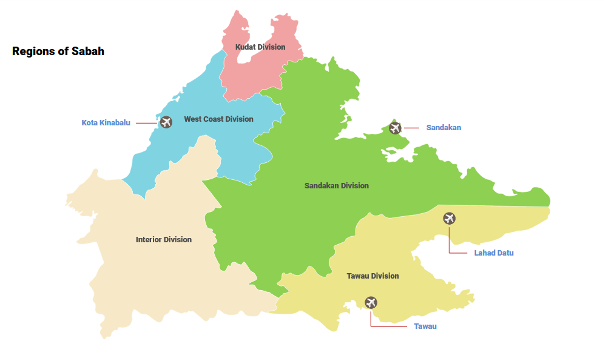

Welcome to the land below the wind, Sabah
HOMEPAGE
HISTORY
CULTURE
FOODS
VACATION
INFO

Sabah is located on the north of the island of Borneo and bounded:
South China Sea in the north, east and west
Indonesia in the south
Sarawak and W.P. Labuan in the southwest
Created by:
NAMES
STUDENT ID
NUR SYAHIRAH BINTI MD AMINUDDIN
2020395917
NUR FITRAH SYAFIQAH BT SHAMSUL ANUAR
2020967619
SITI NUR AQILAH BINTI ROSLAN
2020988285
NOR AMIRA BINTI ZAINI
2020960165